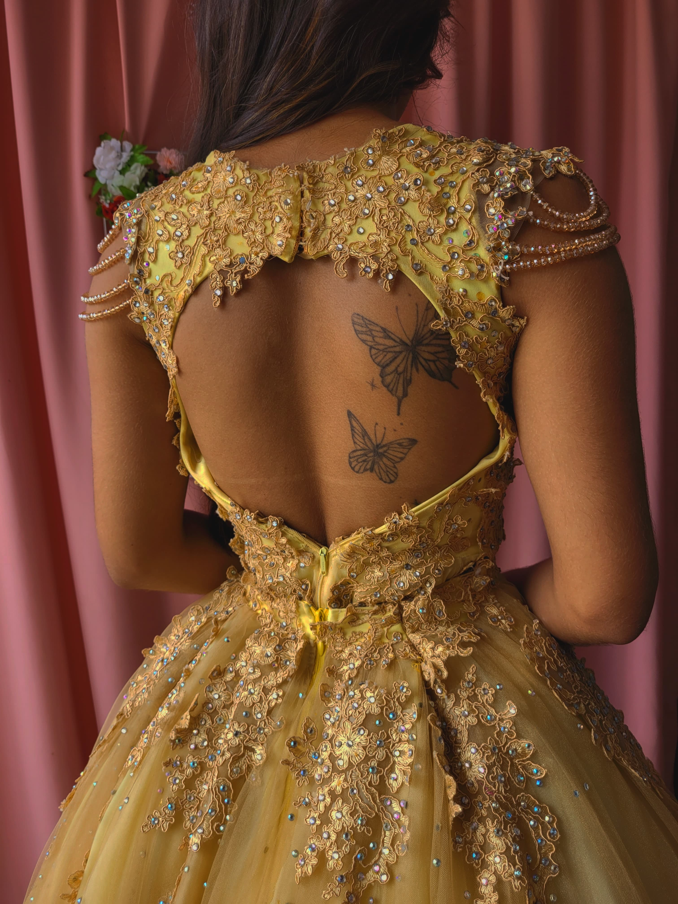

COLEÇÕES DE VESTIDOS

DEBUTANTE

NOIVA
SOCIAL
NOIVA
Vantagens de alugar um vestido
Economia
Sai muito caro comprar vestidos bordados ou feitos sob medida para usar apenas uma vez. Ao optar por alugar, você usa apenas uma pequena parte do seu orçamento.
Ainda tem alguma dúvida? Confira nossas perguntas mais frequentes:
Precisa de mais alguma coisa? Entre em contato.
Chegou ao final da página e ainda precisa de mais alguma informação? Caso precise de qualquer ajuda ou tenha ainda dúvidas, nos envie uma mensagem pelo formulário ou pelos contatos abaixo